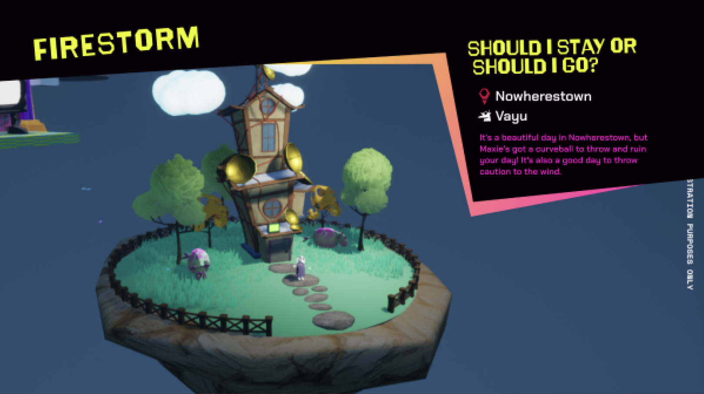

The opening screen toggle menu.

Arcade level selection. Player can view their stats like best time and death count.

Platformer level. Player can see their current time, tokens collected and total number of deaths. The slider on the bottom indicates jump strength.

Tutorial level. Player can see commands at the bottom like keys and mouse buttons to initially guide them through the game.

Level completion UI. Final stats like current time, best time and deaths are displayed along with the title, button controls and, if achieved, new high score box.

A diagram explaining all the buttons and controls.

Dialogue screen UI. Each character has their own layout.

Settings UI. The white boxes indicate current selections, and I also integrated sliders and pop up menus into the UI. There is a navigation bar on the side for when more options are eventually added.

The game has different character headspaces. By hovering in front of the door, the player can see the level name and completion status. There are also commands on the top and middle of the screen.

Exit level UI.
Branch selection UI. Displays the title, location, character and description.
Broadcast menu. The titles and gray boxes are place holders but the player can select what broadcast they want to see.